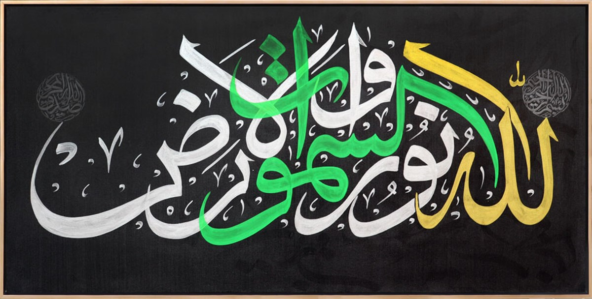
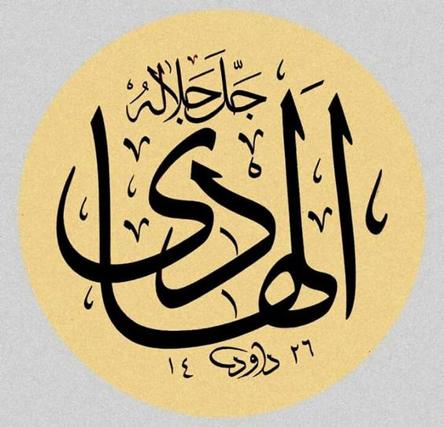

Hidayet isimlerine sıra geldi. Önce Nûr âyeti: 
Karanlık çoktur, ama ışık bir tanedir. Dünyamızdaki bütün ışığın, ısının, enerjinin, yağmurun ve rızkın kaynağı bir tek güneş olduğu gibi, manevi hayatın ve hidayetin kaynağı da tek bir vahiy güneşidir. Bu nedenle, Yüce Kitabımızın dilinde karanlıklar çoğul, ışık ise tekil kullanılır.
Gece sadece ışığı gösterebilmek için yaratılmıştır. Kötülük olmadan iyiyi, hastalık olmadan şifayı anlamadığımız gibi, Nur'u anlamak için de karanlık gereklidir. Işığa benzetme yaparak manevi ışıktan, hidayetten bahsediyoruz. Kitap'ta "karanlıklardan aydınlığa çıkarır" tamlaması tam yedi yerde geçiyor.
33:43
liyuhricekum minez-zulumâti ilen-nûr
O (Allah) ve melekleri sizin için salât eder, sizi karanlıklardan nûra çıkarmak için... O inanlara çok merhametlidir.
Sözlükte “aydınlık, ışık” anlamına gelen nûr kelimesi Kur’ân-ı Kerîm’de ve hadislerde “insanların önünü aydınlatıp doğru ve gerçek olanı görmelerini, hak ile bâtılı, hayır ile şerri ayırt etmelerini sağlayan mânevî ve ilâhî ışık” mânasında kullanılmıştır. Bunun karşıtı zulmettir. “Müminlerin velîsi olan Allah onları karanlıklardan nura çıkarır” meâlindeki âyetlerde mecazi anlamda hidayete nur, dalâlete zulmet denilmiştir. Peygamber gönderilmesinin ve ilâhî kitaplar indirilmesinin esas amacı karanlıkta kalan ve yollarını şaşıran insanlara doğru yolu göstermek olduğundan nur ve zulmet kavramlarına önemle vurgu yapılmıştır.
Kaynak: İslam Ansiklopedisi
Diğer isim Hâdî ise sadece şurada Allah için kullanılmış: 
25:31
vekefâ birabbike hâdiyen venasîrâ
Yol gösterici ve yardımcı olarak Rabbin yeter.